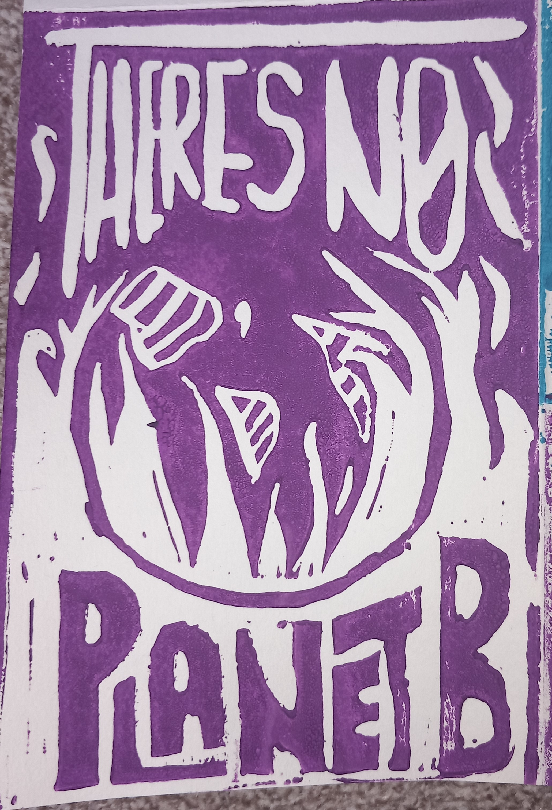
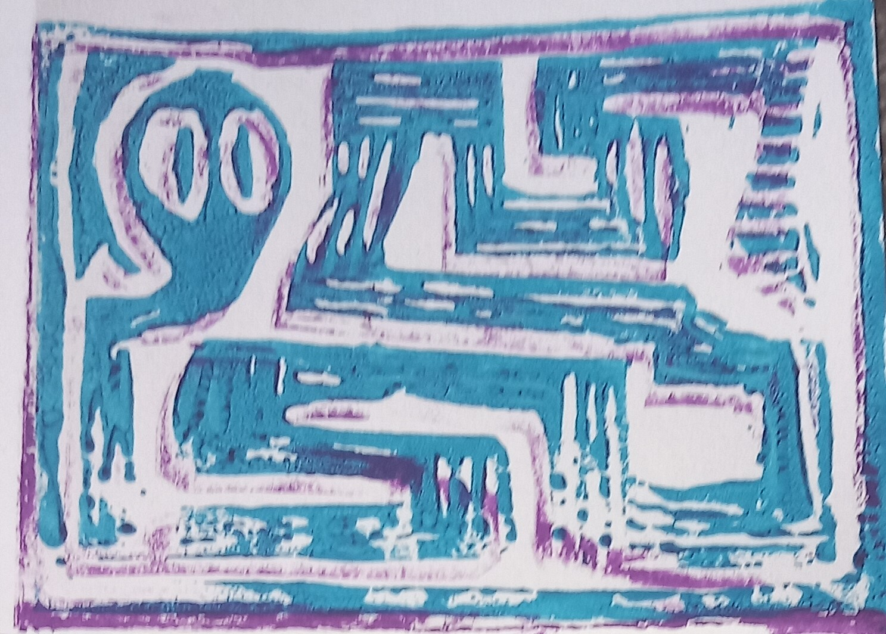
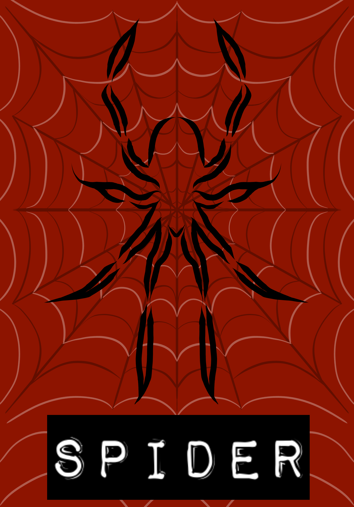
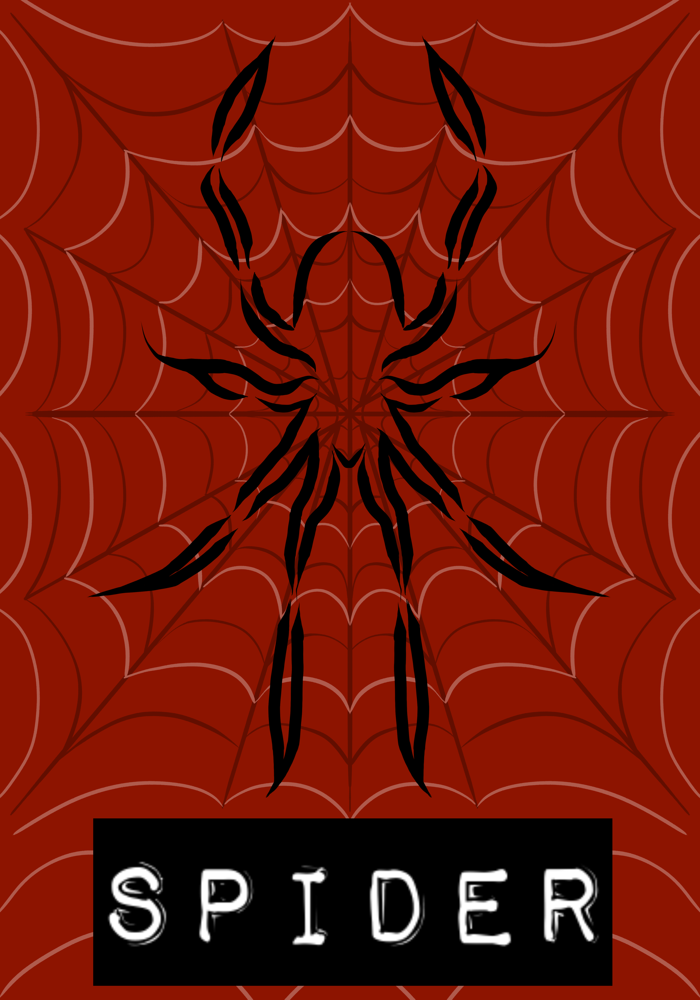

August/ September 2024
In August, I spotted some beautiful Pinterest posts about some specifically punky, radical and environmental style lino prints. Combining these interests meant I had to try it, borrowing some leftover equipment from a course my mum had completed a while ago. I made a couple of animal-themed prints, including a geometric snake and a symmetrical bug, before making my latest print, featured here.
 Once I eventually ran out of this equipment, I decided to experiment with creating digital prints that a similar lino-y, inky effect. Using custom downloadable brushes and the same dimensions, I created these bug-themed prints that look a bit like physical lino prints, with a black, red, and white colour theme. I definitely haven't perfected the technique yet, but I hope I can at least use these samples as a starting point.

 

June 2024
In June, I poured a bit of my heart into creating a banner design for the Butterfly Conservation Trust, entering a competition to be displayed during their section of London's Restore Nature Now March. Using a collage style is something I'm very comfortable with, including some hand-drawn elements stretched my skillset a bit, overall creating a final product I was very pleased with.
After some minor formatting tweaks, I was selected as the winner! I'm still super pleased with myself and a big supporter of the trust's message and actions.
The idea here is to create a 'Black Excellence' zine series, starting with this pilot, the hair edition. It features facts about the history of black hair, including braids, an afro and cornrows, alongside some of my own digital designs, taking inspiration from playing card illustrations and other zine makers I've spotted. I made this one for my mum's birthday.